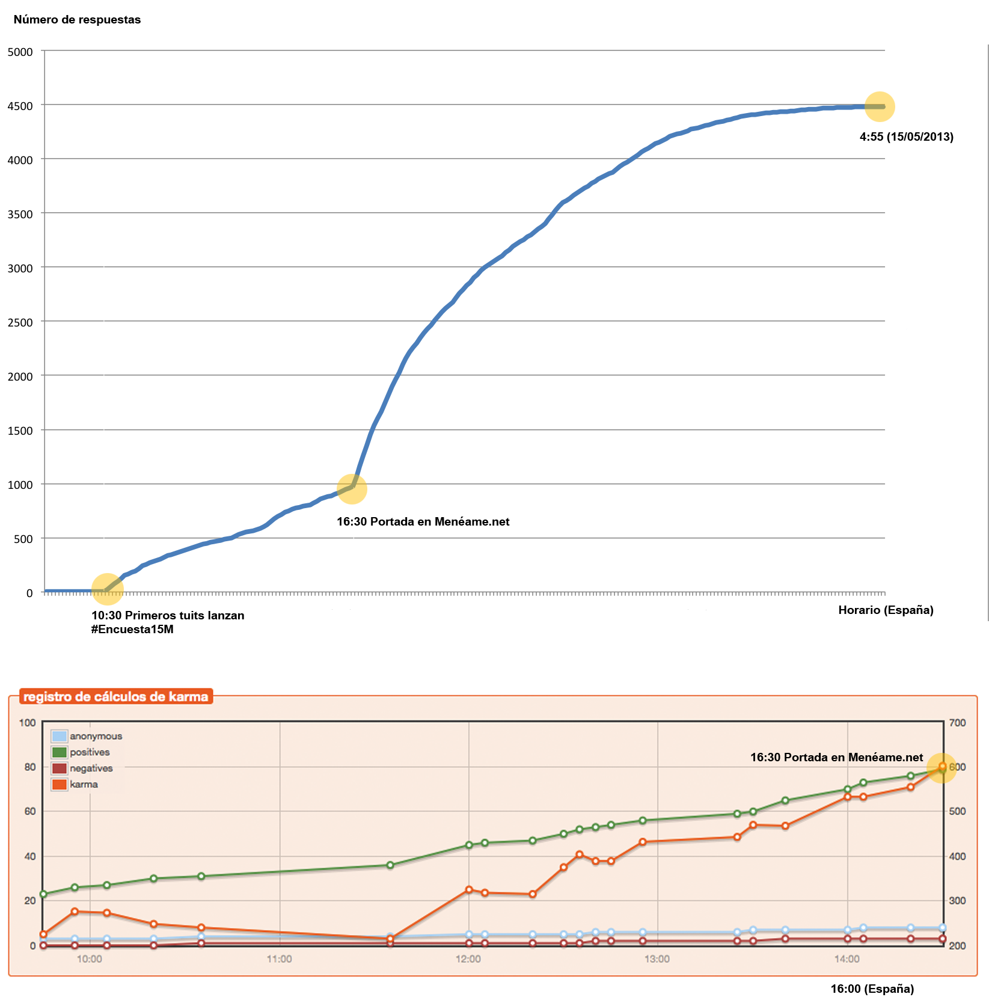
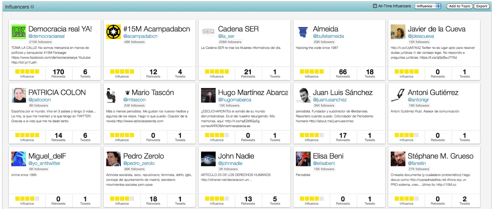
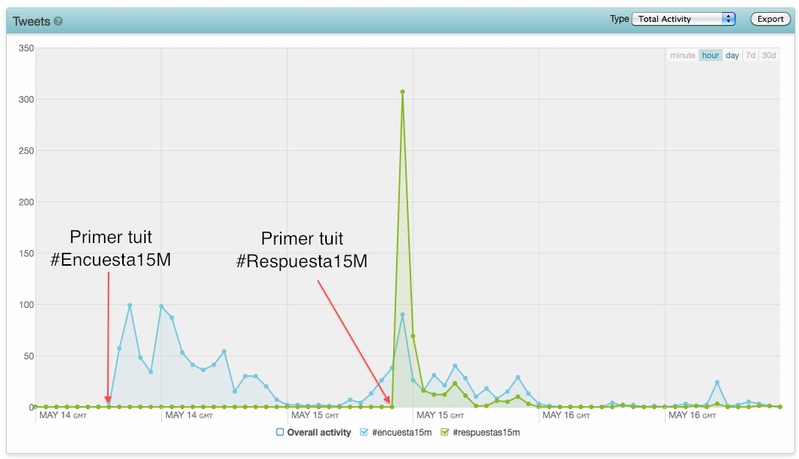
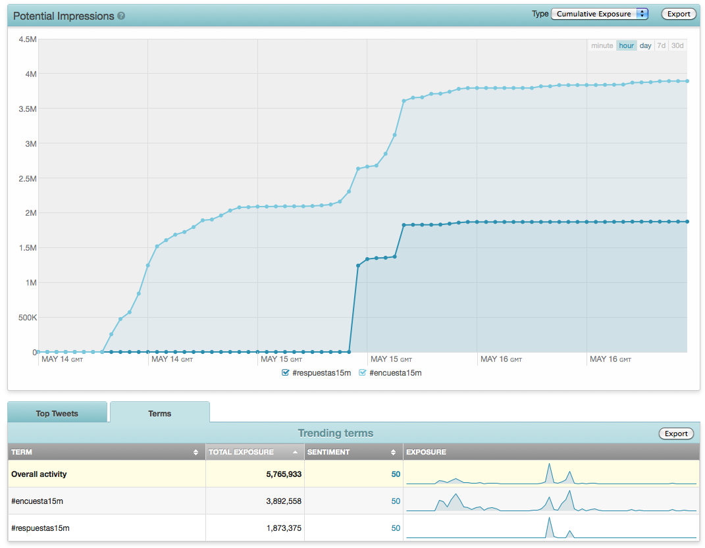

Figura 2.Los 15 Influenciadores según "influencia" entorno a #Encuesta15M y #Respuestas15M.Como se observa, los dos principales son @democraciarealya y @acampadabcn. Fuente: Topsy.com

Figura 3.Actividad de tuits asociados a #Encuesta15M y #Respuestas15M. Las aceleraciones se producen cuando se lanzan los HT.Fuente: Topsy.com

Figura 4.Audiencias potenciales de #Encuesta15M y #Respuestas15M (aprox. unos 6 millones).Nota: El 15M tuvo un apoyo de entre 6 y 8 millones en el 2011 (via http://www.rtve.es/noticias/20110806/mas-seis-millones-espanoles-han-participado-movimiento-15m/452598.shtml). Fuente: Topsy.com
